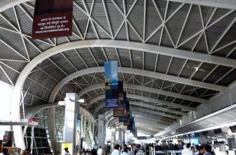
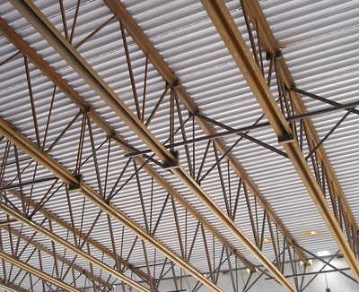

Metal beams or trusses supporting light roofing [RME1]
Metal beams or trusses supporting light-weight roofing system e.g. corrugated metal or plywood sheets over steel rafters or purlins.

Curved steel beams supporting corrugated steel sheet roofing, Mumbai, India (S. Brzev)

Steel trusses (open web steel joists) supporting corrugated steel roofing, Canada (S. Brzev)

Detail of steel trusses (open web steel joists) supporting corrugated steel roofing, Canada (S. Brzev)